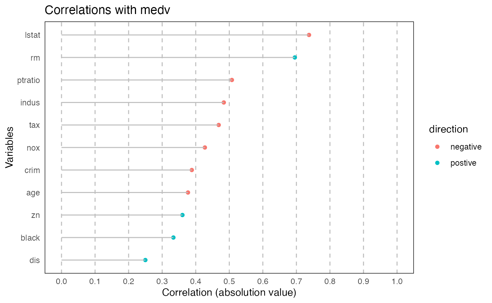

ryx
ryx.Rmd
library(ryx)Introduction
This is a package to compute correlations from a data frame. It also creates a custom type called ‘ryx’ when calling the ryx function, and custom functions for printing, summarizing and plotting these objects are in this package.
ryx
Computes the correlations, and stores it in a ‘ryx’ object that has the dependent, independent, and a data frame stored within that contains more use info
print.ryx
Takes an ryx object and prints a correlation dataframe displaying correlation and significance for each variable.
print(ryx(Boston, y="medv"))
#> Correlations of medv with
#> variable r p sigif
#> cor10 lstat -0.7376627 5.081103e-88 ***
#> cor4 rm 0.6953599 2.487229e-74 ***
#> cor8 ptratio -0.5077867 1.609509e-34 ***
#> cor2 indus -0.4837252 4.900260e-31 ***
#> cor7 tax -0.4685359 5.637734e-29 ***
#> cor3 nox -0.4273208 7.065042e-24 ***
#> cor crim -0.3883046 1.173987e-19 ***
#> cor5 age -0.3769546 1.569982e-18 ***
#> cor1 zn 0.3604453 5.713584e-17 ***
#> cor9 black 0.3334608 1.318113e-14 ***
#> cor6 dis 0.2499287 1.206612e-08 ***
print(ryx(mtcars, y="mpg", x=c("wt", "vs")))
#> Correlations of mpg with
#> variable r p sigif
#> cor wt -0.8676594 1.293959e-10 ***
#> cor1 vs 0.6640389 3.415937e-05 ***summary.ryx
Provides some summary statistics about the correlations, such as: median correlation, range of correlation, how many variables were statistically significant.
summary(ryx(Boston, y="medv"))
#> Correlating medv with crim zn indus nox rm age dis tax ptratio black lstat
#> The median absolute correlation was -0.3883046 with a range from -0.7376627 to 0.6953599
#> 11 out of 11 was significant at the p < 0.05 level.
summary(ryx(mtcars, y="mpg", x=c("wt", "vs")))
#> Correlating mpg with wt vs
#> The median absolute correlation was -0.1018102 with a range from -0.8676594 to 0.6640389
#> 2 out of 2 was significant at the p < 0.05 level.#plot.ryx Plots a ryx object as a scatter plot where the x axis is correlation and y-axis are independent variables
